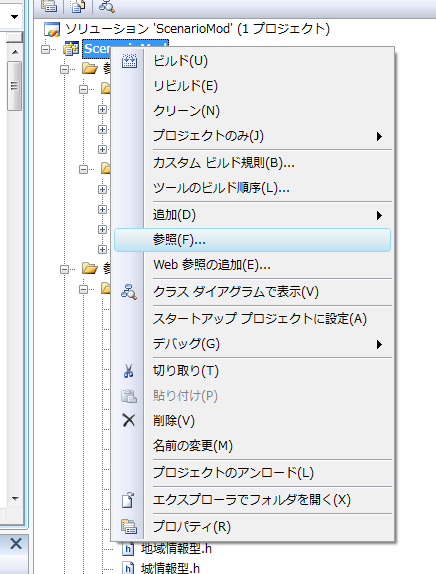
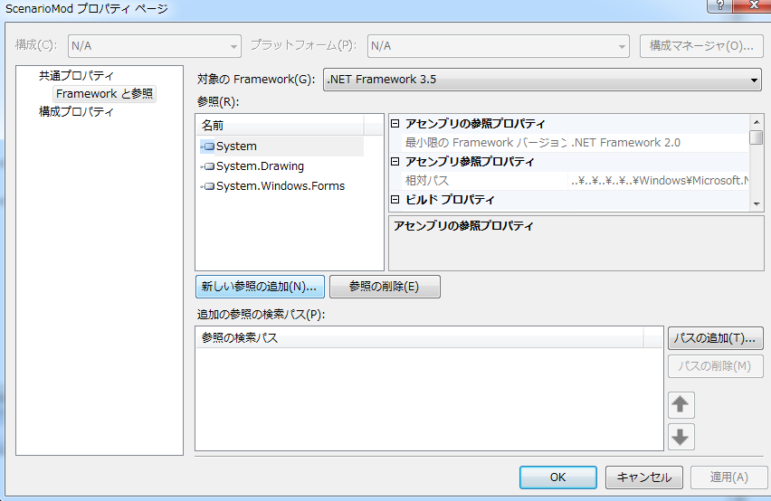
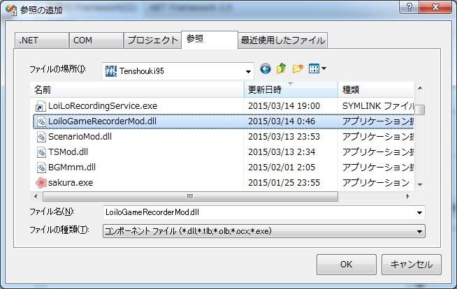

これは、実はModではなく、Mod製作を支えるAPIです。
全てを自作するのではなく、外部アプリケーションの「機能だけをScenarioModで利用する」というサンプルとなります。
このサンプルは天翔記のみならず、一般用途としても利用可能なものです。
仕組みとしては、ロイロゲームレコーダーのUIは使わず
録画コアに近いライブラリのDLLだけ利用する、というものとなります。
ロイロアプリケーションがこのようなAPIを明示的に提供しているわけではありません。
しかし基本的なプログラム知識があれば、 このように、自分の必要な形へとソフトウェアを再構築することが可能です。
#include <windows.h>
using namespace System;
#pragma comment(lib, "user32.lib")
int main(cli::array<System::String ^> ^args)
{
Console::WriteLine(L"Hello World");
// ウィンドウハンドルを得る
HWND hWnd = FindWindow(L"Tenshouki95", NULL);
// 第1引数は本来は、自分自身のウィンドウハンドル(要するに録画プログラム側のウィンドウ)なのであるが、
// 無い場合は、録画相手のものでも指定しておけば良い
// 第2引数は、録画相手のウィンドウハンドル
// 第3引数は、ムービーファイルのフルパス。
LoiloGameRecorderMod::StartRecording((IntPtr)hWnd, (IntPtr)hWnd, gcnew String(L"C:\\abc\\test.avi"));
Sleep(10000);
// ムービーストップ。
LoiloGameRecorderMod::StopRecording();
return 0;
}
ロイロゲームレコーダー本体である「C:\Program Files\LoiLo\LoiLoGameRecorder」のフォルダの中身を天翔記フォルダにコピーしても出来ますが、
「削除が面倒」という問題もありますので、必要な分だけ「複製」する「LoiloGameRecorderModCpy.bat」というプログラムを用意しました。
この「LoiloGameRecorderModCpy.bat」は
１．ロイロから必要な分だけファイルをコピーする。
２．逆に複製したファイルを削除する。
１と２を実行する度に交互に繰り返します。



#include "カスタム駆動関数.h"
using namespace System;
// CLIを使うので、このくらいはネームスペースを省略しよう
void カスタム::On_終了時() {
// 録画終了
LoiloGameRecorderMod::StopRecording();
}
void カスタム::On_メインゲーム開始() {
// パラメータを渡す相手がC#クラスなので、C++/CLIのマネージドな記述を中心とする。
// 天翔記のウィンドウハンドル
System::IntPtr hWndTenshouki = (System::IntPtr)FindWindow("Tenshouki95", NULL);
// 現在実行中のexeが起動したフォルダ。要するに天翔記フォルダ
String^ cur_dir = System::Windows::Forms::Application::StartupPath;
// 天翔記フォルダに"movie"をくっつけて、適当な名前でムービーファイル名を作成する。
// ムービーのフルパス。ムービーフォルダの中に入れる。
String^ file_name = String::Format("Capture_{0:yyyyMMdd_HHmmss}.avi", DateTime::Now);
String^ movie_name = cur_dir + "\\movie\\" + file_name;
// 録画開始
LoiloGameRecorderMod::StartRecording( hWndTenshouki, hWndTenshouki, movie_name);
}